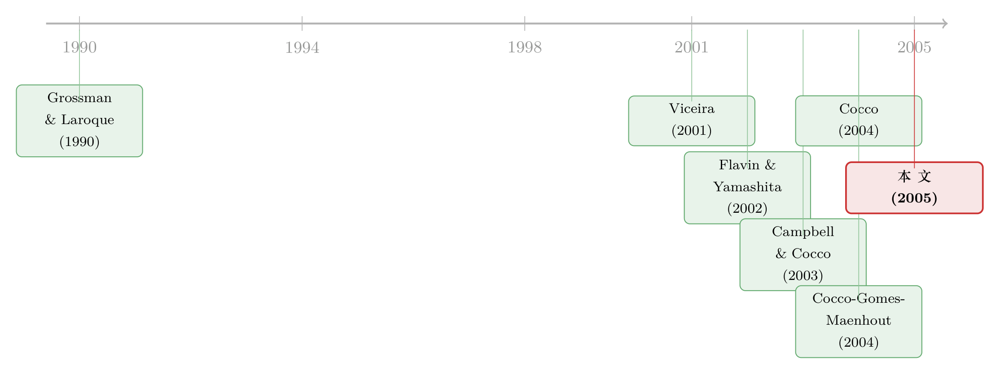

房子，到底是分散了风险，还是挤掉了股票？
本文读的是 Yao & Zhang (2005, Review of Financial Studies)：把「会涨会跌、还能抵押」的房子，连同租房这个选项，一起塞进生命周期的消费—投资模型里。它最有意思的发现是一组看似矛盾的结论——当一个人在「买房」与「租房」之间恰好无差异时，买了房的他，在净财富里持有更少的股票（替代效应），却在流动资产里持有更多的股票（分散效应）。同一个人，两个相反的方向，区别只在于你用哪个分母。
1 一个被财务顾问绕开的问题
先看一组数字。2001 年的美国消费者金融调查（Survey of Consumer Finances, SCF）告诉我们：大约三分之二的美国家庭拥有自住房，而对一个房主来说，房子平均占了他全部资产的 55%。与此同时，约 50% 的家庭持有股票或股票型基金（含退休账户），但股票投资占家庭资产的比重还不到 12%；即便只看那些持股的家庭，股票也撑不到资产的 40%。
换句话说，对绝大多数人而言，一生中最大、最重要的那笔投资，不是股票，是房子。
可吊诡的是，几乎所有教科书式的投资组合理论，乃至现实中给你做配置建议的财务顾问，都默默把房子排除在外——他们盯着的是「流动金融资产」，是股票和债券怎么分。房子？那是另一个部门的事。学术界同样长期绕着走，原因也不难理解：住房市场布满了摩擦——首付要求、抵押约束、卖房时一笔不小的交易费、外加房价本身的波动。把这些东西一股脑塞进一个动态规划问题，状态空间瞬间爆炸。
但绕不过去。房子和别的金融资产有一个本质区别：它身兼两职。它既是一件耐用消费品，你住在里面、从中获得效用；它又是一个投资工具，让你持有一笔「房屋净值（home equity）」。于是一个自然的问题浮上来了：当一个人决定买不买房、买多大的房时，他手里的股票和债券，会跟着怎么变？
这正是 Yao 和 Zhang 这篇 2005 年 RFS 要回答的问题。
2 故事的张力：替代，还是分散？
在这之前，文献里其实已经有了一个相当直觉的答案，来自 Cocco (2004)：房子会挤出（crowd out）股票。道理很简单——你的钱有限，钱都压在了房子上，能买股票的就少了；况且房子本身就是一笔有风险的资产，持有了它，你对风险的「胃口」也就被占掉一部分。这是典型的替代效应（substitution effect）。（关于这条思路，可参见《房子，是资产、是消费，还是一块挡在股市门口的石头？》。）
接着，一个自然的问题是：替代效应是故事的全部吗？
Yao 和 Zhang 说，不是。他们做了一件前人没做的事——把租房市场显式地请进了模型。一旦你能租房，住房的「消费」决策就和住房的「投资」决策被掰开了：你可以一边租着房子满足居住需求，一边把钱攒着去付首付；你也可以买下房子，同时获得居住服务和一笔可抵押的净值。
然后，真正关键的一步出现了。Yao 和 Zhang 提醒我们：当你问「房主持有多少股票」时，你必须先问清楚，分母是什么。
- 如果分母是净财富（net worth）——债券 + 股票 + 房屋净值——那么买房的人确实把更多份额压在了房子上，股票占比下降。这是替代效应，和 Cocco 一致。
- 但如果分母换成流动金融组合（liquid portfolio）——只算债券 + 股票——结论反转了：买房的人反而持有更高的股票占比。
为什么会反转？这就是这篇文章的核心洞见，也是它区别于前人的地方：房子给了房主一个缓冲垫。房屋净值可以在收入下滑、市场下挫时被抵押、被动用，用来平滑消费。正因为背后有这层缓冲，房主在他那一小摊「能随时动」的流动资产里，反而敢于承担更多的股票风险。这是分散效应（diversification effect）。
一句话记住这篇文章：替代效应说的是「房子占了股票的位置」，分散效应说的是「房子壮了股票的胆」。 前者发生在净财富的口径上，后者发生在流动组合的口径上。两者并不矛盾，它们是同一枚硬币的两面——而过去的研究只看见了正面。
于是，整篇文章就是在一个统一的模型里，把这两种效应同时识别出来、并量化它们各自有多大。
3 模型设定：让房子「活」起来
这是一篇结构模型的文章，模型本身就是论证。我们一步步把它拆开。
寿命与生存。 投资者从 20 岁（\(t=0\)）开始做年度决策，最多活到 100 岁（\(T=100\)）。令 \(l_j\) 为在 \(j-1\) 期存活的条件下、\(j\) 期仍存活的概率。活到 \(t\) 期的无条件概率由生存函数给出：
$$ F(t)=\prod_{j=0}^{t} l_j, $$
其中 \(0
劳动收入。 退休前（年龄 \(J=65\)），收入的对数增长率是一个确定性的年龄函数加一个冲击：
$$ \Delta \log Y_t = f(t) + \varepsilon_t, \qquad t=0,\dots,J-1, $$
\(f(t)\) 拟合自大学毕业生的收入剖面，呈一个标准的「驼峰」形；冲击 \(\varepsilon_t\) 是暂时性的，标准差设为 13%。退休后，收入变成退休前最后一年的固定比例 \(\mu=60\%\)（养老金 + 社保）。这套对收入的刻画沿用了 Cocco, Gomes 和 Maenhout (2004)，那篇正是把劳动收入的「背景风险」请进生命周期投资的奠基之作（参见《年纪越大，越该把钱从股票里挪出来吗？》）。
租，还是买。 这是模型的灵魂。要租房，你向房东支付租金，为房屋市值的一个比例 \(a=6.0\%\)；要买房，你至少要付房价的 \(d=20\%\) 作为首付，剩下的部分用按揭融资。买了房，你每年还要花房价的 \(c=1.5\%\) 做维护折旧；卖房时则要承担一笔可观的清算成本，为房价的 \(f=6\%\)——这正是美国房产中介的惯常费率。租房的人不付维护，也能随时搬走。
抵押与借贷约束。 投资者可以投资无风险债券 \(B_t\) 和风险股票 \(S_t\)。不许卖空股票，借钱也只能通过抵押房子来实现。用 \(M_t\) 表示按揭余额，约束写成：
$$ B_t \ge 0 \quad\text{and}\quad 0 \le M_t \le Do_t\,(1-d)\,PH_t\,H_t,\qquad t=0,\dots,T-1, $$
这里 \(Do_t\) 是房主身份的虚拟变量（拥有自住房取 1，否则取 0），\(PH_t\) 是单位住房服务的价格，\(H_t\) 是住房数量。\(1-d\) 就是你能从房子里借出来的最大比例——没有房子（\(Do_t=0\)），你一分钱也借不到。这一条把「房子是唯一的抵押品」这件事，硬硬地刻进了约束里。
偏好。 投资者对数值品消费 \(C_t\) 与住房服务 \(H_t\) 的偏好是 Cobb–Douglas 形式：
$$ u(C_t,H_t)=\frac{\big(C_t^{\,1-v}H_t^{\,v}\big)^{1-\gamma}}{1-\gamma}, $$
其中 \(v=0.2\) 衡量住房服务相对于数值品的重要性，\(\gamma=5\) 是曲率参数。这里藏着一个漂亮的细节：只要你在租房， Cobb–Douglas 就让你把支出在 \(C\) 和 \(H\) 之间按固定比例分配，住房不再是一个独立的状态变量——因为租房不触发任何后续的交易成本。可一旦买房变得比租房更优，清算成本和内生的借贷约束就会打破这个固定比例，你那套房子的价值，就变成了一个会反过来影响消费与组合选择的状态变量。
这就是为什么「显式引入租房市场」如此重要：它让模型在「纯租房」时坍缩回一个干净的、只有劳动收入背景风险的标准组合问题（如 Heaton & Lucas (2000b) 或 Cocco, Gomes & Maenhout (2004) 那一类）；而只有当买房在某些人生阶段确实更优时，住房才作为一个真正的状态变量「活」起来。
3.1 核心方程：一个带遗赠的贝尔曼方程
把上面这些拼起来，投资者的问题就是在预算约束下最大化一生的期望效用。经过用财富 \(Q_t\) 做归一化降维之后，值函数可以写成下面这个贝尔曼方程。它是整篇文章的引擎：
其中选择变量 \(A(t)=\{C_t,H_t,B_t,S_t,Do_t,Ds_t\}\) 包含了消费、住房、债券、股票、租/买身份、以及是否卖房；而充分的状态向量是
$$ X_t \equiv \{Do_{t-1},\,\Delta m_t,\,PH_t,\,H_{t-1},\,Y_t,\,W_t\}, $$
它记录了上期的房主身份、外生搬家冲击 \(\Delta m_t\)、房价、既有房屋规模、收入和净财富。注意：由于卖房有清算成本，上一期的房主身份 \(Do_{t-1}\) 本身就是今天的一个状态变量——你昨天是不是房主，决定了你今天换房要不要先挨一刀。
3.2 杠杆化的房子：分散效应从哪儿冒出来
要看清「分散效应」的来源，关键在净财富的演化方程。期初净财富（已扣除清算成本）是：
$$ W_t = B_{t-1}R_f + S_{t-1}\tilde{R}^{S}_t + Do_{t-1}\,PH_{t-1}H_{t-1}\big[\tilde{R}^{H}_t(1-f)-(1-d)R_f\big]. $$
盯住最后一项。一个房主对住房的敞口，并不是简单地拿房价回报 \(\tilde R^H_t\)；而是一个被杠杆放大的头寸——你只投了首付 \(d\) 那一份本金，却吃下了整套房子 \(\tilde R^H_t\) 的涨跌，同时要为借来的 \((1-d)\) 那部分付出 \(R_f\) 的利息。这意味着，房主天然地持有了一个对住房资产的有效多头，而租房者则相当于持有了一个空头（他要不断付租金）。
这一条，就是后面所有反转的根。当股票回报和房价回报正相关时，这个有效多头会触发一个对冲需求（hedging demand）：房主已经在房子上长得够多了，于是会压低股票持仓；而租房者持有的是住房空头，反而会抬高股票占比。同一个相关性，对房主和租客起了相反的作用。
4 主要结果：同一个人，两个分母
把模型用基准参数解出来——风险利率 \(r_f=2.0\%\)，股票风险溢价 \(\mu=4.0\%\)（作者刻意取了一个比历史 7–8% 低得多的值，呼应 Claus & Thomas (2001)、Fama & French (2002) 对未来溢价应当更低的论断），股票波动 \(\sigma_S=15.7\%\)（标普 500 的历史估计），房价实际升值率 \(\mu_H=0\%\)、波动 \(\sigma_H=10.0\%\)——我们能读出几条清晰的结论。
第一，先租后买的生命周期路径。 流动资产水平低的时候，投资者选择租房：他还在攒首付，被流动性约束捆着。一旦不再受流动性约束，他就买房，去享受自有住房的好处（模型里因为按揭利息的税收优势、自有住房的偏好、以及租房固有的道德风险，买房在其他条件相同时是更受偏爱的）。
第二，也是核心的那条——替代与分散并存。 在投资者恰好对「买」与「租」无差异的那个临界点上：
- 买了房，他在净财富（债券 + 股票 + 房屋净值）里的股票占比下降了——替代效应。房屋净值替代了风险股票的位置。
- 但买了房，他在流动金融组合（债券 + 股票）里的股票占比反而上升了——分散效应。因为房屋净值能在金融与劳动收入风险来袭时充当缓冲，房主敢在流动资产里多冒一点险。
过去的文献强调了前者，而这篇文章第一次把后者识别出来并量化。这正是它最干净的贡献。
第三，无调整区域（no-adjustment region）。 清算成本造出了一个房主不愿动房子的「惰性区间」。在区间内，投资者只能靠调整数值品消费来最优化；而当净值—财富比逼近区间的触发边界时，投资者会提高流动组合里的股票占比——因为越靠近边界，他的有效相对风险厌恶越低。这其实呼应了 Grossman & Laroque (1990) 那个经典直觉：耐用品的交易成本会让风险敞口随着「离触发边界有多远」而起伏。
第四，两种次优政策的代价。 这是文章给现实最直接的一击。如果投资者被迫永远租房（这正是大多数组合选择文献的隐含假设），他会高配股票——因为在攒首付时，他有动机持有一个更安全的流动组合，可一旦永远不让买房，这层动机消失，他就把钱过多地推向了股票。反过来，如果投资者被迫永远买房，他会低配股票——因为放弃了在经济不景气时改租房的选项，他的预防性储蓄变得过度，挤压了风险资产。
福利损失的分布也很有意思：净财富高的人在「永远租房」时损失最大（他们被剥夺了利用自有住房的机会）；而净财富极低的人、或临近终点的老人，在「永远买房」时损失最大（流动性约束或迫近的清算，逼着他们消费了不成比例的住房服务）。
最后，作者用 PSID 数据做了实证检验，同时处理了股市参与的样本选择和影响参与/持股决策的固定效应，发现租房者和房主的组合选择有着不同的决定因素——他们对「净值—收入比」「年龄」这些关键变量的反应方式截然不同。这给模型基于政策函数和模拟的预测，提供了一定的经验支持。
5 文献脉络
这条研究线的演进，是一个「不断给房子松绑」的过程。
最早，Grossman & Laroque (1990) 把住房理解成一件「不可分割、调整有成本」的耐用消费品，证明了交易成本会让住房调整呈现「延迟」特征，并且在买房之后人会降低风险股票的比重。但他们的世界里没有租房、没有劳动收入、没有房价风险——房子是一块孤零零的石头。
接着，生命周期组合选择这一支独立壮大起来：Viceira (2001) 处理了带不可交易劳动收入的长期投资者；Cocco, Gomes & Maenhout (2004) 把驼峰形收入剖面和背景风险系统地装进生命周期。与此同时，Flavin & Yamashita (2002) 从实证上揭示了自有住房如何塑造家庭组合在生命周期上的构成。

然后，住房被正式请回了组合选择的中心。Campbell & Cocco (2003) 研究家庭的按揭选择与风险管理；Cocco (2004) 用模拟刻画了住房如何挤出股票、清算成本如何降低调整频率与股票敞口——这是「替代效应」的代表作。
但真正关键的一步，是 Yao 和 Zhang 这篇 (2005)：他们在 Cocco 的基础上显式引入了租房市场，把住房的「消费」与「投资」两职分离开，于是同时容纳了替代与分散两种效应，并量化了「永远租」「永远买」两种次优政策的代价。它站在 Grossman–Laroque 的耐用品传统与 Cocco–Gomes–Maenhout 的生命周期传统的交汇点上，把两条线拧成了一股。
6 评论与延伸（Q&A + 研究方向）
(a) 几个可能的疑问
Q：替代效应和分散效应明明方向相反，怎么会同时成立、还不打架？
因为它们说的是不同的分母。替代效应作用在净财富（含房屋净值）的口径上：钱压在房子里，股票份额自然降。分散效应作用在流动组合（只含债券和股票）的口径上：因为房屋净值能当缓冲垫，房主在能动的那摊钱里敢多放股票。同一个人，两个比例，两个故事——这恰恰是本文相对 Cocco (
2004) 的增量。
Q：这篇和 Cocco (2004) 到底差在哪？不就是多了个租房选项吗？
「多了个租房选项」听起来小，后果却很大。没有租房，住房的消费和投资被绑死，你要更多居住服务就必须承担更多房价风险，模型只能看见替代效应。有了租房，二者解耦：你可以租着房、把钱投进股债。于是模型才第一次能干净地分离出分散效应，也才能去问「永远租 vs 永远买」这两种次优政策各自错在哪。
Q：基准里股票风险溢价只取了 4%，会不会人为压低了股票持仓？
这是个诚实的选择而非偷懒。作者明确援引 Claus & Thomas (
2001)、Fama & French (2002) 等对「未来溢价应远低于历史7–8%」的论证，取4%。当然，溢价越低、模型里的最优股票配置越保守，所以这个参数确实会影响水平；但本文的核心结论是关于两个分母方向相反的定性事实，对溢价的具体数值并不敏感。
Q：模型里买房在其他条件相同时总是优于租房，这个假设公平吗？
作者给了三条理由：按揭利息的税收优势、自有住房本身带来的消费偏好、以及租房固有的道德风险（你不爱惜不属于你的房子）。这让「先租后买」的生命周期路径内生地长出来。代价是：模型不会产生「终身理性租房者」这种现实中确实存在的人群，这是它在外部效度上的一个边界。
Q：「无调整区域」这个东西，凭什么让房主在边界附近反而更敢买股票？
因为清算成本让相对风险厌恶变得内生且可变（Damgaard, Fuglsbjerg & Munk (
2003) 已指出，有清算成本时风险厌恶不再等于曲率参数 \(\gamma\)）。越靠近「该换房」的触发边界，调整带来的价值越高、有效风险厌恶越低，于是投资者在流动组合里把股票占比抬上去，以换取更好的风险—收益权衡。
Q：股票和房价正相关，为什么对房主和租客的影响是反的？
关键在净财富方程的最后一项：房主持有的是住房的杠杆化多头，租客持有的是空头（不断付租）。正相关时，对冲需求让已经「房子长得很多」的房主减持股票，让持住房空头的租客增持股票。同一个相关性，作用在符号相反的头寸上，自然给出相反的结论。
(b) 几个可能的研究问题与提案
1. 把「房屋净值缓冲」搬到信用市场：抵押品弹性与公司债持有。 【经济故事】本文的分散效应本质是「一笔可抵押的资产，让你在别处敢冒更多险」。对持有公司债的机构（尤其保险公司、养老金）而言，是否也存在类似机制——账上可抵押/可质押资产越充裕，越敢在信用利差上加杠杆？【可行性】中。需要 NAIC 保险公司持仓 + 抵押品结构数据，识别上可借鉴本文的政策函数思路或用监管约束变动做准自然实验，难点是把「缓冲」从「规模」中干净剥离。
2. 外资房主 vs 本地房主的组合差异。 【经济故事】本文揭示房主与租客的组合决定因素截然不同。把这条延伸到跨境维度：持有海外房产的外国投资者，其本国流动组合是否系统性地更激进？外资的「住房缓冲」是否因汇率风险而打折？【可行性】低到中。家庭层面的跨境房产 + 金融组合微观数据极难获得；或可退而用各国 SCF 类调查做横截面比较，但识别偏弱。
3. 利率「锁定效应」对分散效应的侵蚀。 【经济故事】当低息按揭把房主「锁」在原地（搬家即放弃廉价贷款），房屋净值的缓冲功能是否失灵——房主不愿、也不能动用这块净值，分散效应应被削弱。【可行性】高。美国近年的「按揭锁定」是一个干净的外生冲击，已有家庭层面按揭利率与流动资产数据，可做事件研究。可与《被自己 3% 的房贷「锁」在原地》的设定对接。
4. 把租房市场的摩擦显式化。 【经济故事】本文假设租房无交易成本、可随时搬走，这让「纯租房」坍缩得很干净。但现实中租房有押金、有搜寻成本、有租金黏性。把这些摩擦加回去，会不会让「永远租房高配股票」的结论反转？【可行性】中。纯理论扩展可行（在现有 DP 框架加一个租房状态成本），校准所需的租金摩擦参数也有文献支撑，难在维数进一步上升、计算负担加重。
5. 住房作为劳动收入的对冲，还是放大器？ 【经济故事】本文允许房价与劳动收入增长率相关。一个值得追问的方向：在房价与本地就业高度同向的地区（如单一产业城镇），住房不仅没缓冲风险，反而放大了它——失业时房价也跌，缓冲垫塌了。这会把分散效应推向何方？【可行性】高。可用 PSID/SCF 叠加 MSA 层面的房价—就业相关性，做横截面异质性检验，识别清晰、数据可得。
7 我的判断
贡献。 这篇文章最漂亮的地方，是用一个「显式引入租房市场」的小改动，撬开了一个被前人压扁的维度。它没有推翻 Cocco (2004) 的替代效应，而是指出那只是半个故事——把分母从净财富换成流动组合，方向就反过来了。「同一个人、两个分母、两种相反的结论」，这种把看似矛盾的现象统一在一个机制里的论证，是结构模型最有说服力的样子。它对现实也有直接含义：那些把住房一律假设为「永远租」或「永远买」的组合模型，会系统性地把股票配置算偏——一个高估，一个低估。
对识别的担忧。 我有两点保留。其一，结论高度依赖「买房在其他条件相同时优于租房」这个被硬编进偏好的假设；它让生命周期路径变得漂亮，但也排除了现实中理性的终身租房者，外部效度有边界。其二，实证部分虽然处理了样本选择与固定效应，但本质上是用 PSID 的横截面相关性去「支持」一个高度参数化的模型，离因果识别还有距离——模型的定量预测（替代与分散各占多大）很难被这套实证真正证伪。换句话说，这是一篇理论强、实证弱的文章，它的力量在机制的自洽，而非在数据里钉死了一个因果系数。
后续想看到什么。 我最想看的，是把这块「房屋净值缓冲」的逻辑搬到信用市场和外资持有人的语境里去检验：可抵押资产的多寡，是否系统性地改变了机构在信用风险上的胆量？以及在利率「锁定效应」之下，当房屋净值变得动不了，这篇文章引以为傲的分散效应，是不是会安静地消失。
参考文献
Campbell, J., and J. F. Cocco (2003). Household Risk Management and Optimal Mortgage Choice. Quarterly Journal of Economics 118(4), 1149–1194.
Claus, J., and J. Thomas (2001). Equity Premia as Low as Three Percent? Evidence from Analysts' Earnings Forecasts for Domestic and International Stock Markets. Journal of Finance 56(5), 1629–1666.
Cocco, J. F. (2004). Portfolio Choice in the Presence of Housing. Review of Financial Studies, forthcoming.
Cocco, J. F., F. J. Gomes, and P. J. Maenhout (2004). Consumption and Portfolio Choice over the Life-Cycle. Review of Financial Studies, forthcoming.
Damgaard, A., B. Fuglsbjerg, and C. Munk (2003). Optimal Consumption and Investment Strategies with a Perishable and an Indivisible Durable Consumption Good. Journal of Economic Dynamics and Control 28(2), 209–253.
Fama, E. F., and K. R. French (2002). The Equity Premium. Journal of Finance 57(2), 637–659.
Flavin, M., and T. Yamashita (2002). Owner-Occupied Housing and the Composition of the Household Portfolio over the Life Cycle. American Economic Review 92(1), 345–362.
Grossman, S. J., and G. Laroque (1990). Asset Pricing and Optimal Portfolio Choice in the Presence of Illiquid Durable Consumption Goods. Econometrica 58(1), 25–51.
Heaton, J., and D. Lucas (2000b). Portfolio Choice in the Presence of Background Risk. Economic Journal 110(460), 1–26.
Viceira, L. M. (2001). Optimal Portfolio Choice for Long-Horizon Investors with Nontradable Labor Income. Journal of Finance 56(2), 433–470.
Yao, R., and H. H. Zhang (2005). Optimal Consumption and Portfolio Choices with Risky Housing and Borrowing Constraints. Review of Financial Studies 18(1), 197–239.